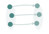
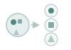

Seeing cells change
Using visual reasoning to follow cells, describe their behavior and turn observations into structured evidence.
Visual reasoning with TravisZoe Piran · Postdoctoral fellow
I connect visual reasoning, live-cell imaging and experimental knowledge to understand biology as it happens.
Aviv RegevGenentech Research & Early Development
Jure LeskovecStanford University
My work brings together three ways of looking at biology.
Using visual reasoning to follow cells, describe their behavior and turn observations into structured evidence.
Visual reasoning with TravisSeparating overlapping biological signals to reveal what makes cells different—and what they share.
biolord SiFTLearning how cellular states relate across time, space and measurements, beyond a single snapshot.
moscot moslinMany biological changes are easy to see and hard to capture with a fixed set of pixel measurements.
Travis uses basic visual capabilities to ask focused questions about images. An agent brings these observations together, investigates hypotheses and records the evidence as a study develops.
Tracing by visual reasoning · AITHYRA 2026
Relating cellular states with optimal transport.

Separating the factors that shape cellular identity.
Filtering known signals to reveal biological variation.
Learning shared structure across multiple views.
12 Dec 2026
Co-organizing · NeurIPS, Paris
02 Nov 2026
Talk · AITHYRA, Vienna
24 Feb 2026
Talk · ILANIT/FISEB, Eilat
I also co-organize the Stanford AI+Biomedicine Seminar.
About me
I’m a postdoctoral fellow at Genentech and Stanford, working with Aviv Regev and Jure Leskovec. I’m interested in how AI can help us observe, understand and investigate biological systems.
I trained in computer science and physics at the Hebrew University of Jerusalem. During my PhD with Mor Nitzan, I developed methods for decoding cellular identities in single-cell data. My doctoral dissertation was awarded distinction.
Earlier, I worked with Naftali Tishby and Zohar Ringel on information theory, and with Marco Cuturi at Apple on representation learning.
Full background & CV